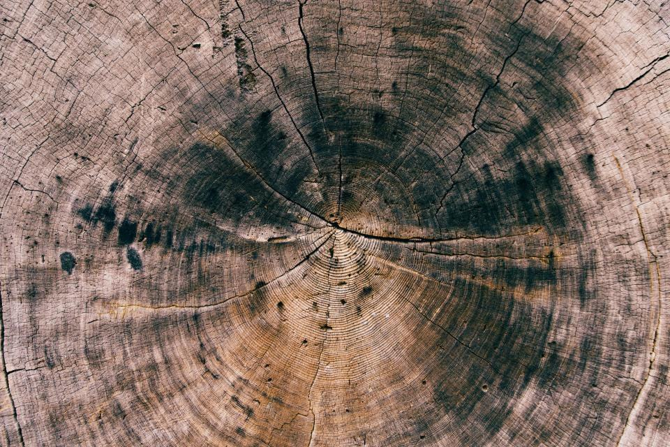
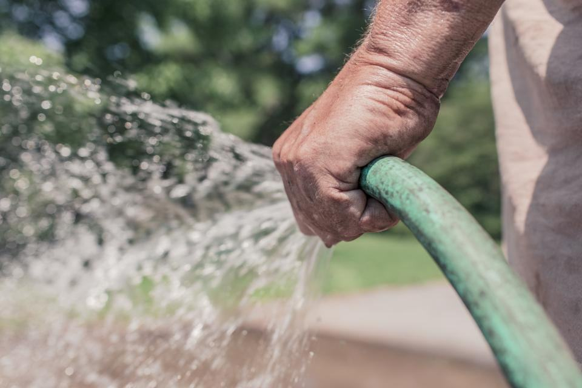
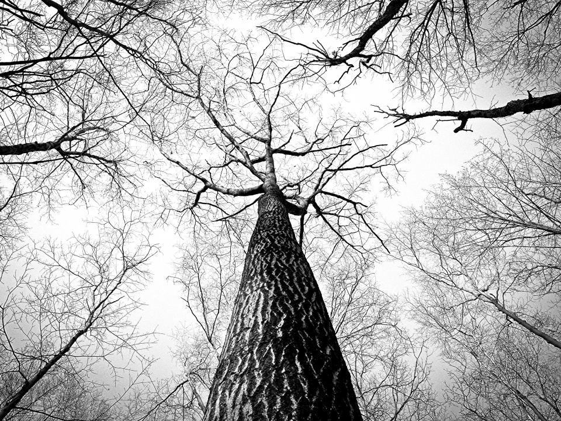
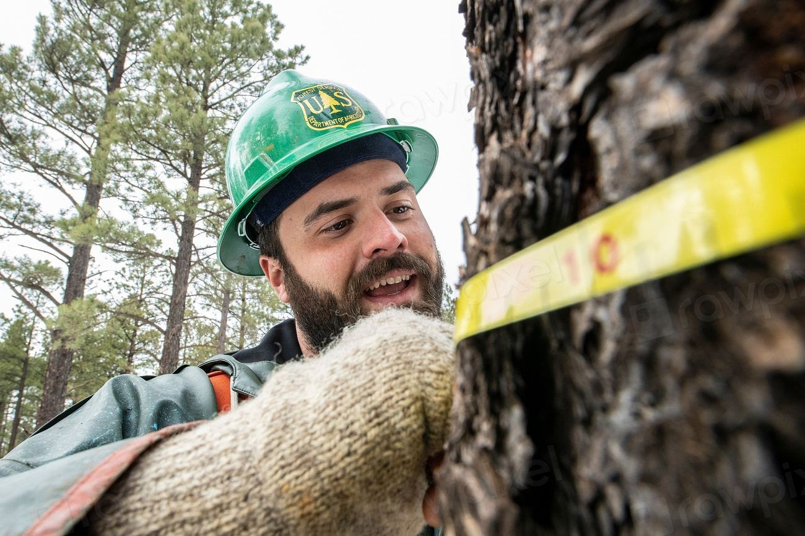

Teamet
Sju anställda som både besiktar och utför åtgärderna.

Grundare, ETW och ISA
Johan Ersson
Har mätt 4 000 träd med tomograf
Johan gör de svåra bedömningarna och utbildar kommunala trädansvariga i VTA.

Besiktningsansvarig
Karolina Matsson
Skriver protokollen
Karolina har landskapsingenjörsexamen och ansvarar för att varje protokoll håller samma standard.

Arbetsledare, åtgärder
Olle Back
Stag, beskärning och fällning
Olle leder åtgärdslaget och har monterat över 300 kronstag.

Arborist
Amanda Gustafsson
Klättrar och mäter
Amanda klättrar i kronorna vid dragprov och inspekterar sprickor uppifrån.